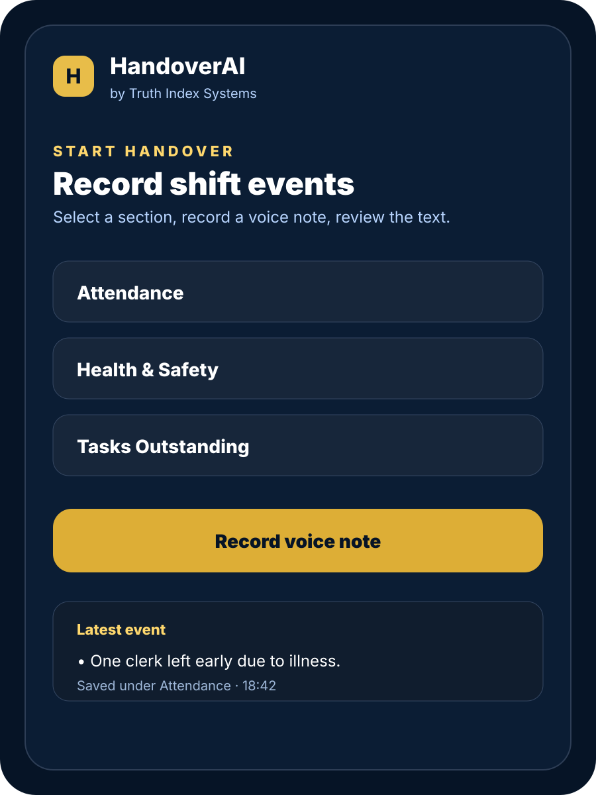
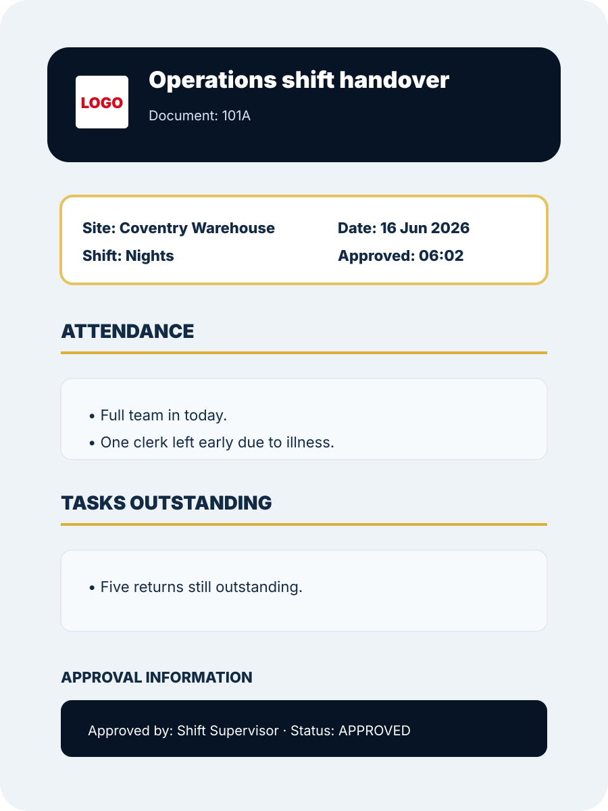
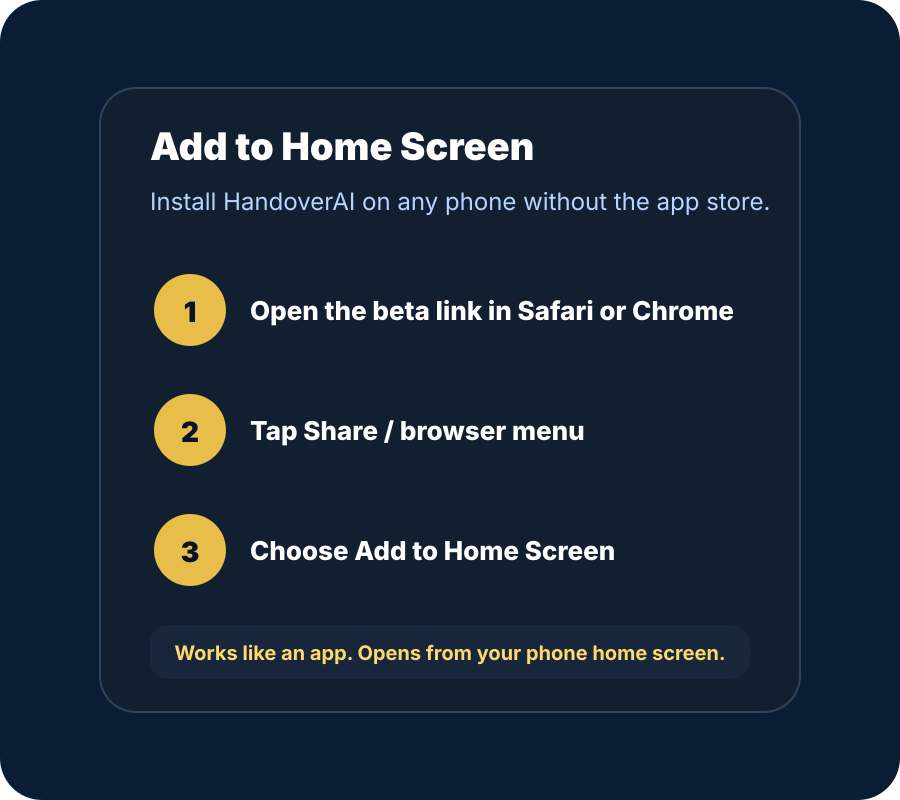

Never miss a moment during a shift again.
Record events as they happen using quick voice notes. HandoverAI turns them into a professional handover that can be reviewed, approved, emailed and archived.

Capture events instantly
Select a section, speak naturally, and save the note in seconds. No end-of-shift memory test.
Review before sending
AI prepares the handover, but the supervisor edits, reviews and approves before anything is sent.
Audit-ready archive
Approved handovers are sent by email, attached as PDF and stored for later review.
Built for shift-based teams.
Manufacturing, warehousing, logistics, care, security, facilities and maintenance teams all face the same problem: important information gets lost between shifts.


Works like a phone app.
No app store required for beta. Open HandoverAI in your mobile browser and add it to your home screen for quick shift access.
Free during beta. Not free forever.
Help shape HandoverAI with real feedback and bug reports. Early beta organisations receive a 20% lifetime discount when paid plans launch.
HandoverAI is currently in beta. Please avoid entering sensitive personal data unless authorised by your organisation.